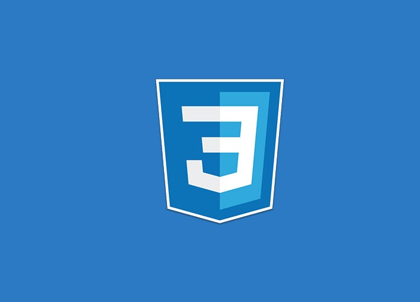
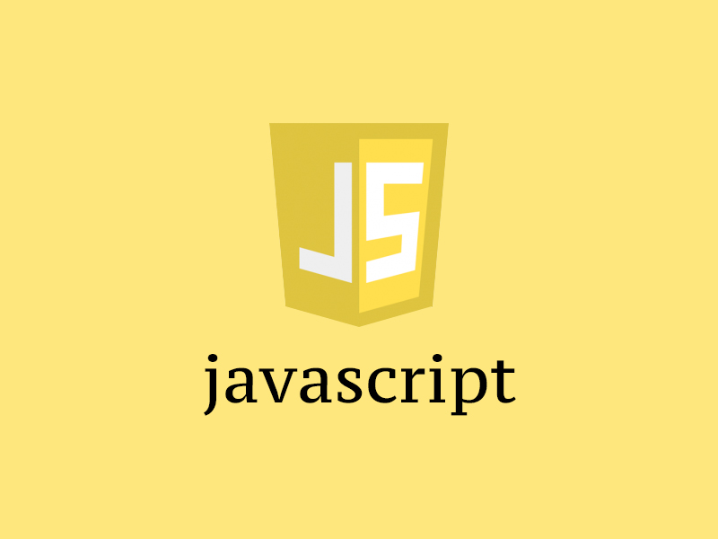
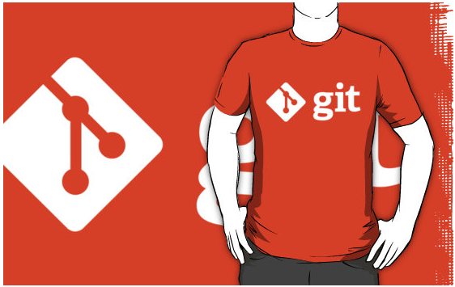
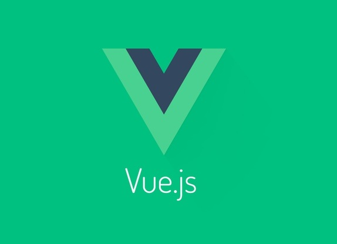

-

HTML5
HTML5是HTML最新的修订版本，2014年10月由万维网联盟（W3C）完成标准制定。
-

CSS
CSS 用于控制网页的样式和布局。CSS3 是最新的 CSS 标准。
-

JavaScript
JavaScript 是 Web 的编程语言。所有现代的 HTML 页面都使用 JavaScript。
-
Node.js
简单的说 Node.js 就是运行在服务端的 JavaScript。
-

git
Git是一个开源的分布式版本控制系统，用于敏捷高效地处理任何或小或大的项目。
-
jQuery
jQuery 是一个 JavaScript 库，极大地简化了 JavaScript 编程。
-
Bootstrap
来自 Twitter，是目前最受欢迎的前端框架。
-

Vue.js
Vue.js是一套构建用户界面的渐进式框架。
-
HTTP
HTTP协议是因特网上应用最为广泛的一种网络传输协议，所有的WWW文件都必须遵守这个标准。